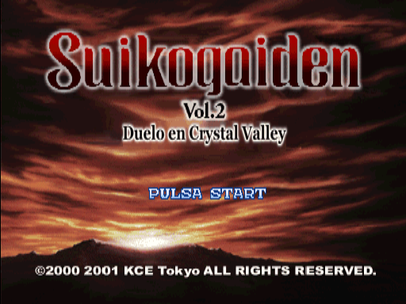
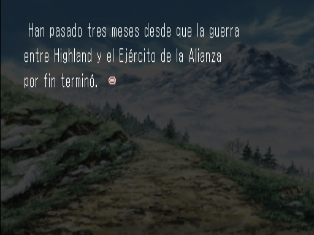
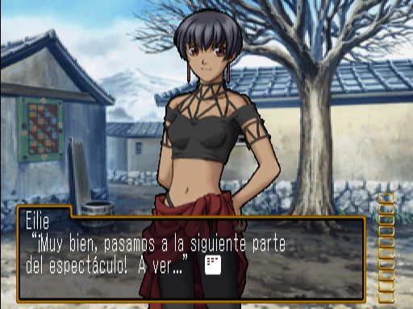
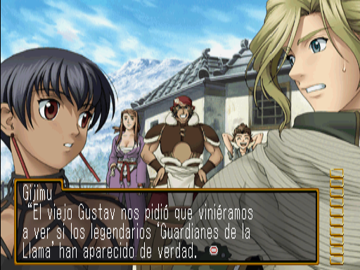

PlayStation · Konami · 2001
Vol.2 · Duelo en Crystal Valley
Traducción al español
Proyecto de traducción al Español por Fveralv.




Estado
⚠ Versión 1.1. Corrige el cuelgue al empezar una partida nueva de la 1.0 y traduce la ayuda de la galería de imágenes. Toda la historia, los menús, el título, las tarjetas de episodio y la galería están en español. Si encuentras un texto cortado o un fallo, abre una issue con una captura.
Progreso general del proyecto
Por secciones
| Sección | Estado |
|---|---|
| Historia: los 4 episodios (46 escenas, 8.078 líneas) | Traducido |
| Fuente con á é í ó ú ü ñ ¿ ¡ y mayúsculas acentuadas | Hecho |
| Menús, guardado, opciones e importación de Suikogaiden Vol.1 y Suikoden I/II | Traducido |
| Pantalla de título: «PULSA START», menú y subtítulo | Traducido |
| Tarjetas de episodio («Episodio 1 『Orgullo』»...) | Traducido |
| Ayuda de la galería de imágenes («SIGUIENTE / ATRÁS / VER CG...») | Traducido |
| Pruebas completas en juego | En curso |
Descarga
⬇ Parche: próximamente
Repositorio
El parche solo contiene las diferencias con el disco. No incluye el juego: necesitas tu propia copia.
¿Te gusta lo que hago? Si crees que mi trabajo merece la pena, puedes apoyarme invitándome a un café. ¡Cualquier aporte me ayuda a seguir creando! ☕
Cómo aplicarlo
- Parte de tu imagen de Gensou Suiko Gaiden Vol.2 (Japón, SLPM-866.63) con el parche inglés ya aplicado, en formato
.bin/.cue(RAW, no.iso). - Haz una copia de seguridad del
.bin. - Aplica
Suikogaiden2_ES.v1.1.ppfsobre ese.bincon un aplicador de PPF (PPF-O-Matic o MultiPatch). El aplicador comprueba que el disco es la versión correcta. - Si el
.binnuevo tiene otro nombre, edita la líneaFILEdel.cuepara que coincida y carga el.cueen tu emulador.
Comprueba antes que tu imagen con el parche inglés es la correcta:
| MD5 | F3A6A6B2BB8925E1876703D089558280 |
| SHA-1 | 221284DBCA176F32E6BC372527F84DEC032B619A |
| Resultado | 918635EF26817F0767D652749CB493F01AFF5731 (SHA-1 ya traducido) |
Notas
- Es la continuación de la traducción de Vol.1: mismas herramientas, misma fuente y mismo glosario (sir Nash, Grassland, Crystal Valley, Runa Verdadera, Gremio de la Voz Aullante...).
- La traducción parte de la versión inglesa de la comunidad. Los nombres de personajes y lugares se mantienen (Nash, Zaj, Lena, Julie, Caleria...).
- Si importas datos de Suikoden, los nombres de tu protagonista, tu castillo y tu ejército aparecen tal y como los escribiste.
- Algunas frases van algo reformuladas para caber en el ancho del cuadro de diálogo.
- Los rótulos gráficos «NOW LOADING» y «MESSAGE SKIP ON/OFF» siguen en inglés.
- Si encuentras un texto cortado, que se sale del cuadro o un símbolo raro, abre una incidencia en el repositorio indicando dónde estabas y la frase exacta.